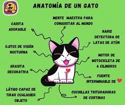

🐱 Anatomía Felina 🐱
👁️ Sistema Sensorial Hiperdesarrollado
Los gatos son máquinas de caza evolutivas.
| Sentido |
Dato Científico |
| 👀 Visión |
• Pupilas verticales que se dilatan 300%
• Ven 6-8 veces mejor en la oscuridad que los humanos
• Campo visual de 200° (los humanos 180°)
• Tienen un tercer párpado (membrana nictitante)
|
| 👂 Oído |
• Detectan ultrasonidos de presas (hasta 85kHz)
• 32 músculos por oreja (nosotros solo tenemos 6)
• Pueden rotar sus orejas 180 grados
• Localizan sonidos con precisión de 5 cm a 1 metro
|
| 👃 Olfato |
• 200 millones de receptores olfativos
• Tienen un GPS nasal para orientarse
• Usan el órgano de Jacobson para análisis químico
• Pueden oler la humedad en el aire (anticipan lluvia)
|
🦴 Esqueleto de Supergato
¿Por qué son tan flexibles?
📌 Datos Clave:
- 230 huesos (más que los humanos)
- Cola mágica: Actúa como timón al saltar y equilibrador
- Clavículas flotantes: Pasan por espacios estrechos
- Columna vertebral ultra flexible: 53 vértebras (humanos: 33)
- Sin rótula fija: Permite saltos de hasta 6 veces su altura
- Garras retráctiles: Sistema de tendones único
💪 Músculos y Movimiento
- Pueden correr a 48 km/h en distancias cortas
- Realizan el reflejo de enderezamiento al caer
- Tienen 517 músculos (los humanos: 650)
- Su zancada usa la columna como resorte

🧠 Cerebro y Sistema Nervioso
- Procesan información visual 25% más rápido que humanos
- Memoria a corto plazo de 16 horas (mejor que perros)
- Sueño REM profundo (por eso corren dormidos)
- Bigotes conectados directamente al sistema nervioso
|